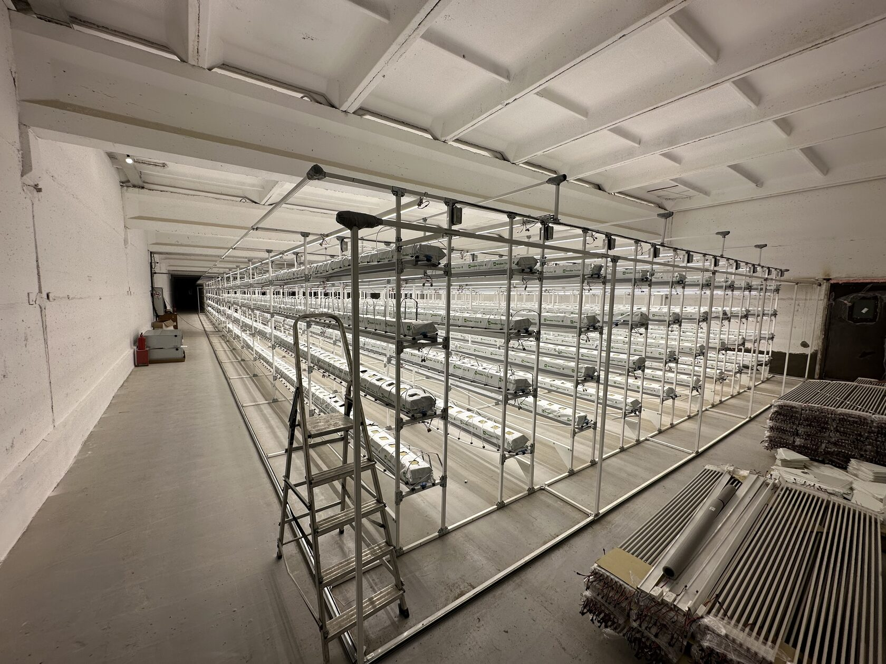

1. Для чего
Когда идти сюда
Плотность фермы, компоновку ярусов, доступ к обслуживанию и основу для всей инженерной схемы объекта.
Эта категория работает не как обычный каталог. Стеллажи, каркасы и модули — проектные позиции. Их не покупают в один клик: сначала считают состав, смету, ограничения объекта и связку со светом, поливом и обслуживанием.

Плотность фермы, компоновку ярусов, доступ к обслуживанию и основу для всей инженерной схемы объекта.
Высоту помещения, ширину проходов, задачу по урожайности, масштаб проекта и логику интеграции со светом и поливом.
Почти никогда. Правильный режим для таких позиций — получить состав и смету, а не оформлять обычный checkout.

Карточка показывает не абстрактный товар, а состав, совместимость и логику внедрения под объект.

Отдельный слой между магазином и расчётом: прозрачный состав, что входит, чего не хватает и какой путь дальше.
Ниже точные SKU из старого раздела. Но даже они имеют смысл только тогда, когда понятны высота помещения, логика рядов и связка со светом и поливом.

Базовая стеллажная ячейка на 16 матов и 800 Вт света. Точка входа, если нужен стартовый модуль под понятный сценарий.

Узел для расширения линии без повторного входа в базовую конфигурацию. Нормален, если стартовый модуль уже существует.
Компонент стеллажного узла. Небольшая позиция, но брать её нужно только если геометрия стеллажа уже не вызывает вопросов.